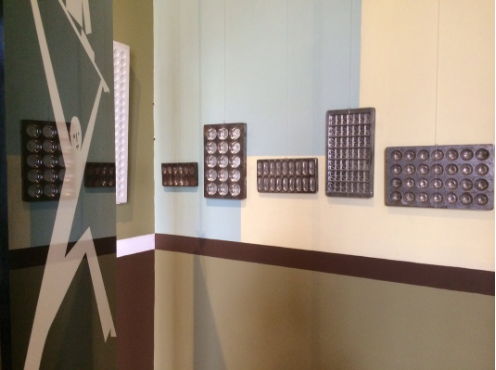
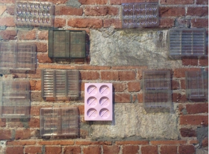

El molde para chocolate
Los primeros moldes para chocolate surgen en paralelo a la revolución industrial de este producto, a mediados del siglo XIX.
Los moldes de aleaciones metálicas coladas ya existían en el siglo XVIII, y se utilizaron especialmente para la producción de helados.
Es muy juguetona, le encanta salir a correr
Sin embargo, la principal desventaja de estos moldes para la industria del chocolate era su peso y su tamaño, por lo que se buscaron materiales alternativos que facilitaran el proceso del chocolate.
El poder comercializar el chocolate de forma sólida gracias a los moldes y a los nuevos procesos de producción del siglo XIX provocaron un auge en el consumo masivo del chocolate.
